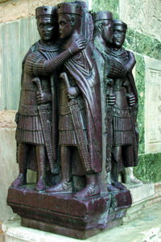
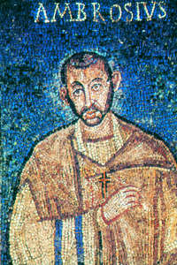
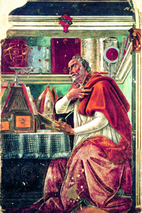

Lezione 4  L'Impero romano
L'Impero romano

-
250
500
-
190
280
-
330
170
-
270
430
-
140
250
-
240
320
-
280
530

COSTANTINOPOLI
Il gruppo in porfido dei Tetrarchi, oggi a Venezia in seguito ai saccheggi della Quarta crociata del 1204, è uno dei monumenti più rappresentativi dell’arte tardoantica: al realismo e alla naturalezza della scultura romana si sostituisce una più rigida schematizzazione e una maggiore solennità delle pose.
MILANO
Sant’Ambrogio, nativo di Treviri, esercita un’influenza profonda nella storia della Chiesa e soprattutto della liturgia: sotto il suo episcopato, Milano diviene, insieme a Roma e a Costantinopoli, la terza grande “capitale cristiana” del mondo tardoantico; questo mosaico del V secolo è visibile nella Cappella di san Vittore, all’interno della basilica che porta il suo nome.
SANT'AGOSTINO
Nativo di Ippona, sant’Agostino è uno dei più grandi scrittori e uno dei più influenti teologi della cristianità. Non abbiamo notizie sul suo reale aspetto; questo ritratto rinascimentale di Sandro Botticelli ne è una delle più celebri ricostruzioni di fantasia.TESSALONICA
Nel 380 d.C., con l’Editto di Tessalonica, l’imperatore Teodosio proclama il cristianesimo religione di Stato. Sul finir del secolo la pressione dei popoli germanici, slavi e asiatici si fa sempre più pressante, mentre il mito di Roma si affievolisce: interi corpi militari sono ormai formati dai “barbari”, e barbari sono anche i loro comandanti.TREVIRI
Diocleziano riforma l’esercito, che si era ridotto ad essere essenzialmente di frontiera per la difesa dei confini, troppo vasti da controllare. Introduce la categoria del comitatus, formato da soldati scelti e in grado di muoversi velocemente laddove necessario, e la categoria dei limitanei, assoldati dai proprietari terrieri. Sempre più spesso elementi germanici entrano a far parte delle milizie a difesa dei confini .ROMA
Nel 303-304 d.C. con Diocleziano si apre la questione religiosa e iniziano le persecuzioni dei cristiani, che non riconoscono la politica dell’imperatore basata sulla semi-divinizzazione del sovrano.NICEA
Nel 324 d.C., a Nicea, Costantino organizza il primo concilio ecumenico per porre fine alle divisioni interne al cristianesimo, che non giovano a una religione al servizio dello Stato. Nel Concilio di Nicea viene condannato l’arianesimo, bollato come eresia. Si afferma che «Gesù è della stessa sostanza del padre» e quindi divina, e non umana, come sostengono i seguaci di Ario.